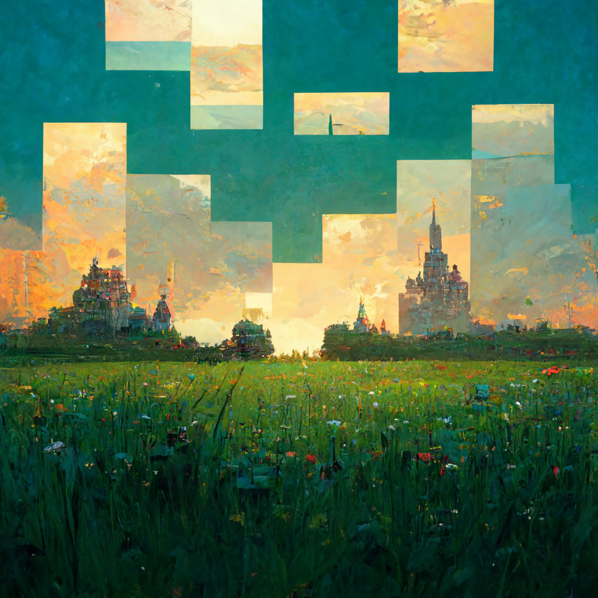

Bevezetés
Ma egy igazán ki magasló látványosságot hoztam önöknek. Szeretnek hegyet mászni? Esetleg kipróbálná magát valami ismeretben sportban? A (Chilliard) hegyet fogom maguknak bemutatni. Miért is szeretnénk hegyet mászni? A hegymászás lehetővé teszi, hogy teljes élményben részesüljenek a nagy szabadban, azáltal, hogy a magaslati hegycsúcsokról szemléltetik a világot, növelik a fizikai alkalmasságat és a mentális egészségét, és biztonságos módot kínálnak önöknek arra, hogy szembe szálljanak és ellenőrizzék az alapvető emberi félelmeket - a magaságtól való félelmet. De vajon csak pozitív oldala van ennek a sportágnak? Természetesen nem, rengeteg időt, energiát és bátorságot igényel hisz a hegymászás gyakran kockázatos sport, amely mind állóképeséget, mind a sikert igényli, de a hegymászó felszerelést és szerszámokat, mint a kötelek, hevederek, bütykök, anyák, karabinerek és mászó sisakok használatosak a mászás és a gravitáció kockázatának csökkentésére, biztonságos, ha jól érezte magát. De mennyire veszélyes vajon megmászni ezt a bizonyos hegyet? Hála égnek nagyon kevés veszély fenyeget minket, ha a kijelölt útvonalakat használjuk. Ugyan itt is lehetséges néhány kisebb horzsolás, de ha követjük a szabályokat és biztonsági előírásokat a hegymászóssal kapcsolatban nem eshet nagyobb bajunk. De miért is szeretnénk ezt a hegyet megmászni? Hisz ez a legfontosabb kérdés mindenek elött. Miért is pont itt nem valahol máshol? Legfőbb érvem eme fenséges hegy mellett mégis csak a fentről elénk táruló látvány, de más okok is közre játszhatnak miért szeretnénk meghódítani eme csodálatos csúcsot. Akár extrémebb sportokat is űzhetünk hisz mind mountenbikera mind crossmotorozásra helyet adhat. Viszont, ha csak kikapcsolódni szeretnénk egyremek hely egy hétvégi családi túrára és akár egy meghit kellemes randevúra is csak vigyázunk meg ne támadjon minket valami ős faj. Összeségében én csak ajánlani tudom eme csodás látványú magaslatot. Kellemes hegymászást és szép időt kívánok.